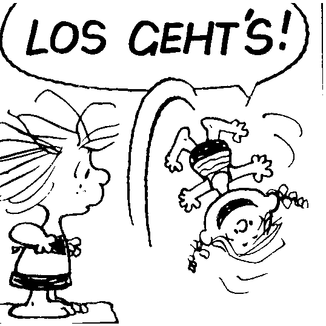

… where we derive an analytical expression for the Mach number uncertainties from non-linear regression.
Accounting for the channel width “broadening” effects - we subtract the channel width from the observed full width at half-max maximum of the line (in quadrature): $\Delta V{FWHM} = \sqrt{\Delta V{obs}^2 - \Delta V_{chan}^2}$. To find the degree of non-thermal motions, we also remove the thermal broadening component to get the non-thermal velocity dispersion from the observed line width (well we’re also switching over to using velocity dispersions):
$$ \sigma{nt} = \sqrt{\sigma{obs}^2 - \frac{kB T{kin}}{m_{\mathrm{NH3}}} - \sigma{chan}^2}, $$
where $\sigma{chan} = \Delta V{chan} / \sqrt{8 \ln{2}}$ is a notation introduced specifically to wreak confusion. A useful way to quantify the degree of the non-thermal motions in the gas is to compare those against the local sonic gas speed $c_s \equiv \sqrt{\frac{kB T{kin}}{m{gas}}}$, where $m{gas}$, an average mass of the particle in the gas medium, is commonly taken to be $2.33$ a.m.u. So then a sonic Mach number could be computed as the ratio of the two quantities (ignoring the fact that some people throw in an extra $\sqrt{3}$ factor there), is $\mathcal{M} \equiv \frac{\sigma_{nt}}{c_s}$.
So we’ve got some idea on what the kinetic temperature in the gas is, and the generic fitting routine we use spits put uncertainties on $\sigma_{nt}$ - what’s the uncertainty on the Mach number then?
Assuming the uncertainties on $T{kin}$ and $\sigma{nt}$ (let’s denote them as $\sigma{T{kin}}$ and, again just to confuse people with all the nested subscripts, $\sigma{\sigma{obs}}$) are uncorrelated, we go to Wikipedia a credible and well-known source to find that formula you should have remembered at this point while brushing the dust off from whatever deep dark corner of your mind the Calculus I lectures ran off to slowly rot away. Aaaand there it is:
$$ \sigma{\mathcal{M}} = \sqrt{\sigma{\sigma{obs}}^2 \big[\frac{\partial \mathcal{M}}{\partial {\sigma{obs}}}\big]^2 + \sigma{T{kin}}^2 \big[\frac{\partial \mathcal{M}}{\partial {T_{kin}}}\big]^2}$$

$$ \sigma{\mathcal{M}} = \sqrt{\sigma{\sigma{obs}}^2 \big[\frac{\partial \mathcal{M}}{\partial {\sigma{obs}}}\big]^2 + \sigma{T{kin}}^2 \big[\frac{\partial \mathcal{M}}{\partial {T{kin}}}\big]^2} = \sqrt{\sigma{\sigma{obs}}^2 \big[\frac{\partial}{\partial {\sigma{obs}}} \sqrt{\frac{\sigma_{obs}^2 - kB T{kin} / m_{\mathrm{NH3}} - \sigma{chan}^2}{kB T{kin} / m{gas}}} \big]^2 + \sigma{T{kin}}^2 \Big[\frac{\partial}{\partial {T{kin}}} \sqrt{\frac{\sigma_{obs}^2 - kB T{kin} / m_{\mathrm{NH3}} - \sigma{chan}^2}{kB T{kin} / m{gas}}} \Big]^2} = \Bigg(\sigma{\sigma{obs}}^2 \Big[\frac{1}{2} \big(\frac{\sigma{obs}^2 - kB T{kin} / m_{\mathrm{NH3}} - \sigma{chan}^2}{kB T{kin} / m_{gas}}\big)^{- \frac{1}{2}} (kB T{kin} / m{gas})^{-1} 2 \sigma{obs} \Big]^2 + \sigma{T{kin}}^2 \Big[\frac{1}{2} \big(\frac{\sigma_{obs}^2 - kB T{kin} / m_{\mathrm{NH3}} - \sigma{chan}^2}{kB T{kin} / m{gas}}\big)^{- \frac{1}{2}} \big(- \frac{\sigma{obs}^2 - \sigma_{chan}^2}{kB T{kin}^2 / m_{gas}}\big)^2\Big]^2 \Bigg)^{\frac{1}{2}} = \frac{1}{2} \sqrt{\frac{kB T{kin} / m{gas}}{(\sigma{obs}^2 - \sigma_{chan}^2) - kB T{kin} / m_{\mathrm{NH3}}}} \Bigg( \frac{4 \sigma{\sigma{obs}}^2 \sigma{obs}^2 T{kin}^2 + \sigma{T{kin}}^2 (\sigma{obs}^2 - \sigma_{chan}^2)^2}{kB^2 T{kin}^4 / m_{gas}^2} \Bigg)^{\frac{1}{2}}, $$
which finally reduces to
$$ \sigma{\mathcal{M}} = \frac{\sqrt{m{gas} m_{\mathrm{NH3}}}}{2} \sqrt{\frac{\sigma{T{kin}}^2 (\sigma{obs}^2 - \sigma{chan}^2)^2 + 4 \sigma{\sigma{obs}}^2 \sigma{obs}^2 T_{kin}^2}{kB T{kin}^3 (m_{\mathrm{NH3}} (\sigma{obs}^2 - \sigma_{chan}^2) - kB T{kin})}}. $$
While this does not make me a mathematician, at least it is more robust than blindly trusting the numerical error propagations?